El Tesoro emitirá el próximo año deuda por importe de 10,3 billones de pesetas , lo que supone una reducción de tres billones frente a lo que colocará este año , según el Proyecto de Ley de Presupuestos Generales del Estado para el 2001.
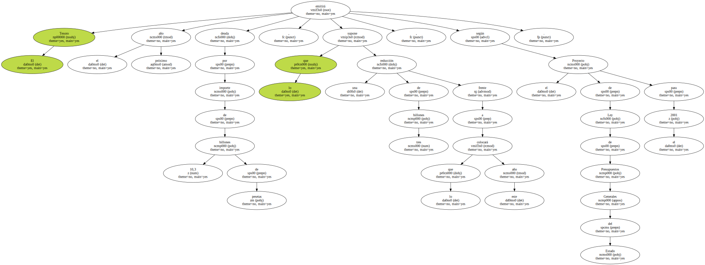Este descenso está provocado por la disminución de la necesidad de endeudamiento del Estado y por el menor vencimiento de deuda , que han permitido que , en los últimos cuatro años , el Tesoro haya reducido a la mitad los fondos que debe obtener en los mercados.
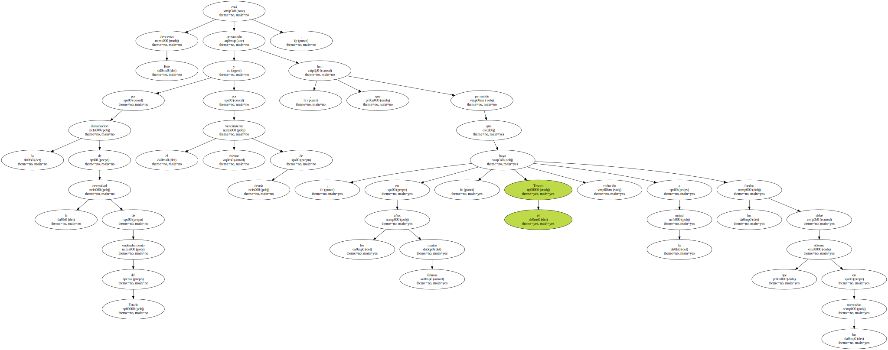El Tesoro prevé amortizar deuda el próximo año por importe de 9,3 billones de pesetas , un 21 por ciento menos que este ejercicio , gracias a la política de alargamiento de la vida media de los títulos.
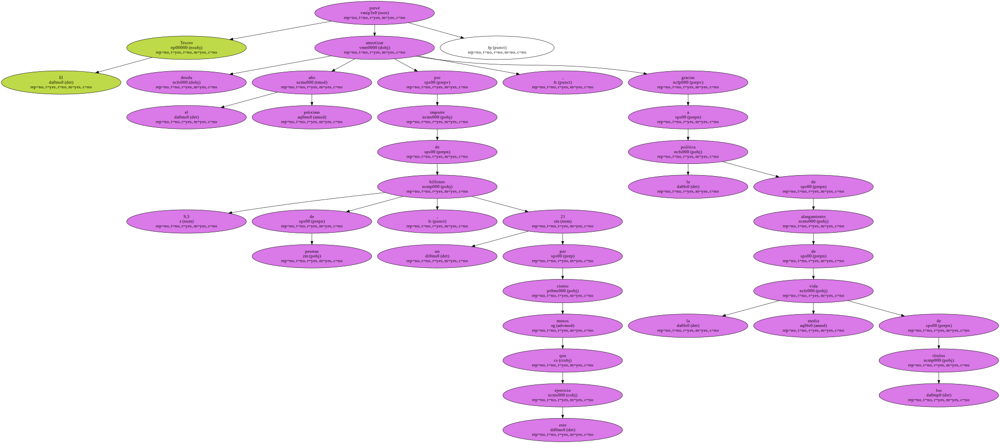El vencimiento medio se ha situado en 5,5 años , dos más que a mediados de los noventa , extensión que permite al Estado reducir su exposición a los repuntes de tipos pero que , al tiempo , provoca un aumento de la deuda en circulación.
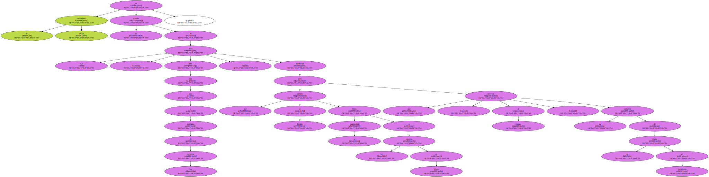Por ello , a finales del próximo ejercicio , las emisiones vivas ascenderán a 52,6 billones de pesetas , 1,14 billones más que este año.
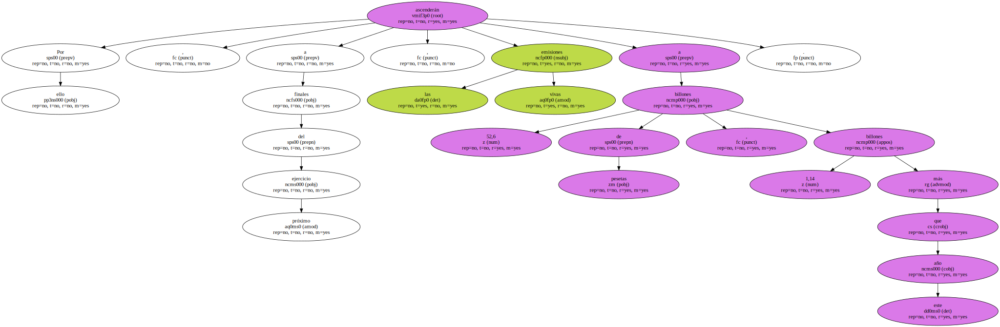El incremento no impedirá que el volumen de deuda en circulación comparado con el Producto Interior Bruto ( PIB ) se reduzca dos puntos hasta situarse en el 50 por ciento , caída justificada por " el crecimiento económico y la contención del déficit público ".

Los intereses de la deuda supondrán al Estado el próximo año un desembolso de 2,84 billones de pesetas , que una vez descontados los ingresos derivados de la emisión quedarán en 2,78 billones , el cuatro por ciento menos que este año.
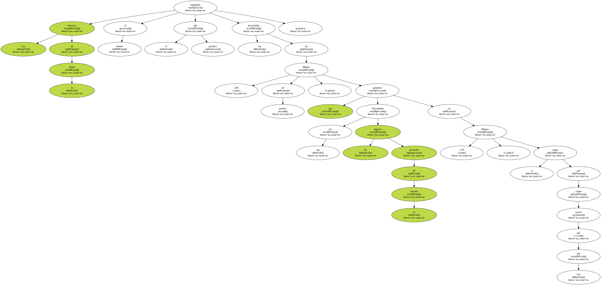Estas previsiones " se basan en unos supuestos de emisión continuistas con lo realizado este año " que intentan compatibilizar los objetivos de minimizar la carga financiera y el riesgo de refinanciación.
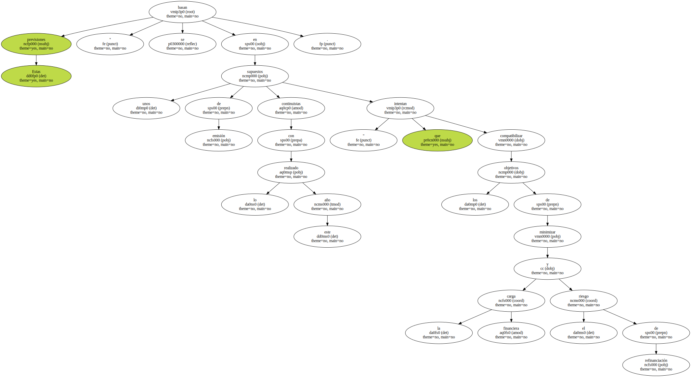En los dos últimos años , los tipos medios de emisión de la deuda han aumentado dos puntos , encarecimiento que comenzará a mostrarse en el coste de la deuda el próximo año , cuando además se refinanciarán letras emitidas en 1998 y 1999.
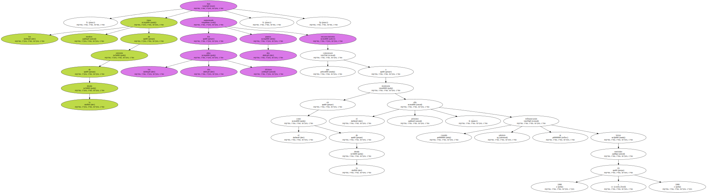El Gobierno espera mantener la vida media de la deuda en los niveles actuales el próximo año , en línea con los del resto de Europa , teniendo en cuenta que las previsiones de tipos para el 2001 descontadas por los mercados apuntan a subidas adicionales de los tipos a corto y algo menores a medio y largo plazo.
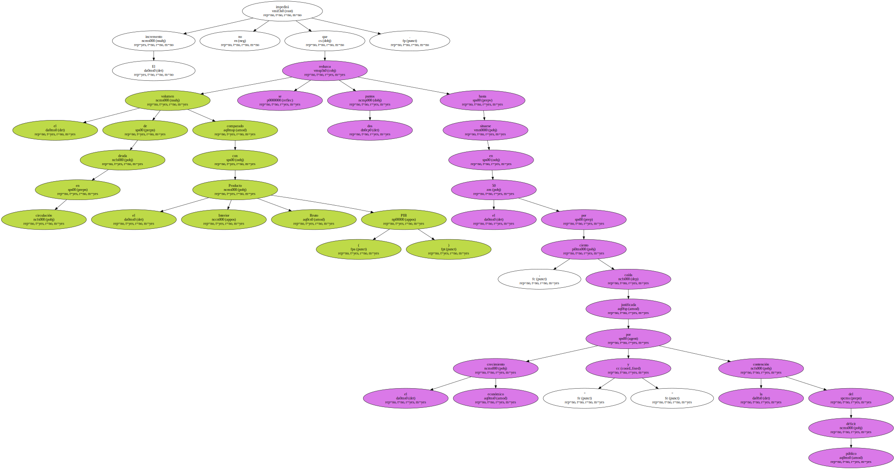El Tesoro concentrará la financiación neta del Estado en bonos y obligaciones , mientras que las emisiones en letras serán inferiores a las amortizaciones.
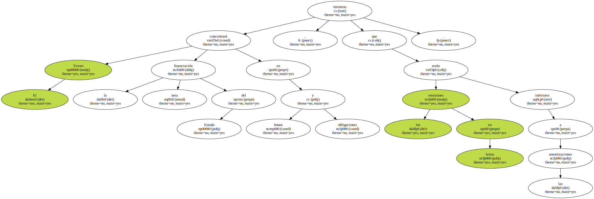Dentro de ellos , los bonos a tres y cinco años acumularán mayor volumen que los de quince y treinta años , en tanto que las letras a doce y dieciocho meses serán más habituales que las de seis meses , que " tendrán un carácter más residual y volátil , dependiendo del día a día de la Tesorería del Estado ".
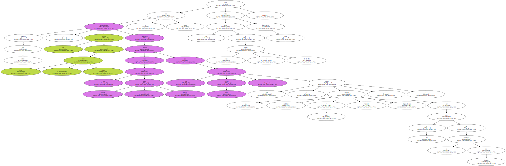Como en los últimos años , " el Tesoro mantendrá abierta la posibilidad de realizar emisiones oportunistas que conlleven un ahorro respecto a la financiación tradicional vía bonos y obligaciones " , apunta el Proyecto.
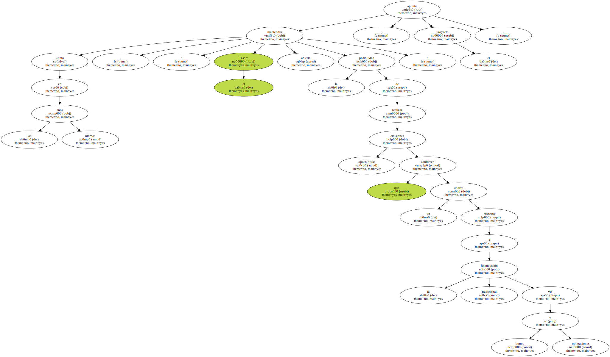Este organismo tiene intención de mantener " una cierta actividad " en monedas distintas al euro y condiciona la realización de canjes de deuda a que " presupuestariamente sea posible asumir los intereses adicionales que generan ".
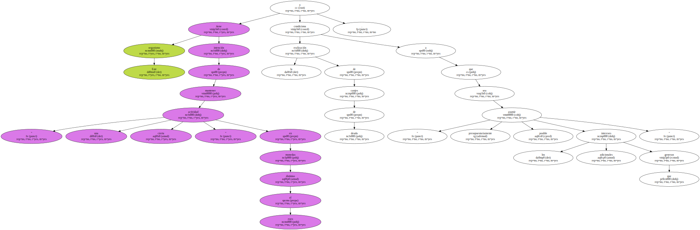Además , es " previsible " que durante el próximo ejercicio el Tesoro vuelva a recomprar valores en el mercado secundario , para minimizar el coste y , al mismo tiempo , garantizar un elevado grado de transparencia que evite distorsiones en el mercado.
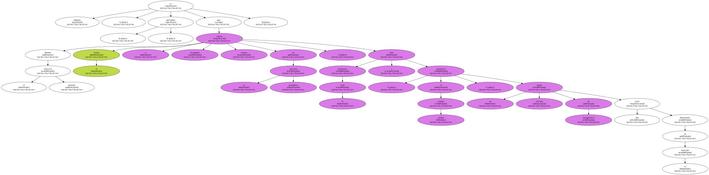